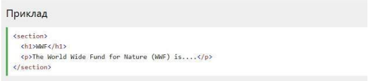
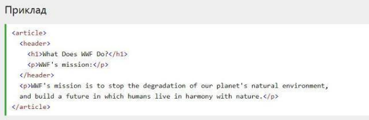

Підтримка браузерів
Семантичні елементи HTML5 підтримуються у всіх сучасних браузерах
Крім того, ви можете "навчити" старих браузерів, як обробляти "невідомі елементи".
Прочитайте про це в підтримці браузера HTML5 .
Нові семантичні елементи в HTML5
HTML5 пропонує нові семантичні елементи для визначення різних частин веб-сторінки:
<section><article><header><footer>
HTML5 <section> елемент
Елемент <section> визначає розділ в документі.
Згідно з документацією W3C HTML5: "розділ представляє собою тематичну угруповання контенту, зазвичай з заголовком".
Домашня сторінка зазвичай може бути розділена на розділи для ознайомлення, змісту і контактної інформації.
HTML5 <article> елемент
Елемент <article> визначає незалежний, автономний вміст.
Стаття повинна мати сенс самостійно, і вона повинна мати можливість читати його незалежно від іншої частини веб-сайту.
Приклади того, де можна використовувати елемент <article>:
- Повідомлення на форумі
- блозі
- Газетна стаття
HTML5 <header> елемент
Елемент <header> задає заголовок для документа або розділу.
Елемент <header> повинен використовуватися в якості контейнера для
вступного змісту.
В одному документі може бути кілька елементів <header>
У наступному прикладі визначається заголовок для статті:
HTML5 <footer> елемент
Елемент <footer> вказує нижній колонтитул для документа або розділу
Нижній колонтитул зазвичай містить автора документа, інформацію про авторське право, посилання на умови використання, контактні дані і т.д.
В одному документі може бути кілька елементів <footer>.